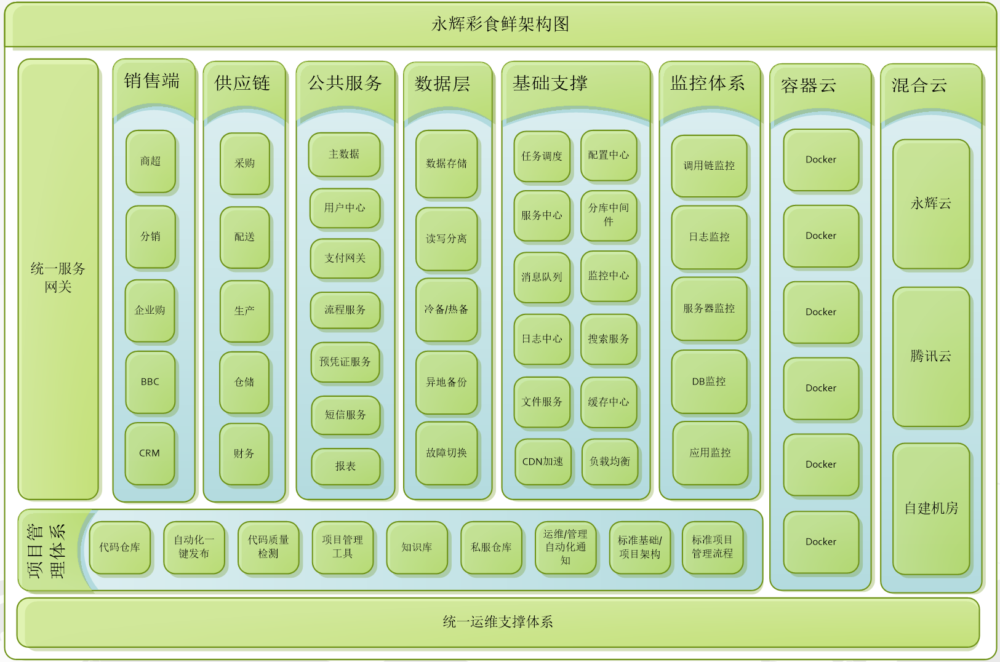

背景
满足整个永辉彩食鲜大B业务从线上到供应链的全线业务系统的研发和维护,保证整个系统的稳定性和性能。
架构思考
大B业务不同于小B业务，它没有常见的业务高并发的场景，所以更多是对业务数据的一致性（业务数据基本都跟财务相关），系统的稳定性和常规故障自动恢复能力有更高期盼和要求。同时伴随业务的及数据增长，整体系统性能要保证的稳定。
总体架构图

架构演进历程
项目基础设施搭建 -> 运维自动化 ->数据库运维构建 -> 分布式基础设施搭建 -> 分布式监控体系构建 -> 分布式框架自研 -> 业务基础服务构建 -> 技术分享 -> 开源社区构建
(大致的推进重新历程如上,实际场景下不分严格先后顺序。)
项目基础设施的建设
涉及 gitlab, svn, jenkins , nexus, sonar, 禅道, 知识库；剥离出永辉自身的研发基础设施，减少频繁的沟通成本，获取系统的管理员权限便于打通研发和运维自动化。
运维自动化
1. 钉钉自动化报警/通知
涉及jenkins,gitlab,禅道,sonar,知识库等自动化集成。
2. jenkins 一键发布
涉及jenkins的一键滚动发布,自动回滚,异常自动重启,便于运维快速发布，避免手工发布的出错。
3. docker 容器集群化
从docker单机版到docker集群版本，逐步验证，逐步推进到线上环境部署，提升现有服务器的资源的利用率，优化服务的稳定性（自动恢复机制），更加精简运维的维护。（如果高并发场景的业务，考虑实现自动化的弹性扩容服务）
数据库运维构建
1. 存储: 数据库采用mysql存储,innodb存储引擎。
2. 读写分离: 采用主从mysql 进行读写分离。
3. 冷备热备: 采用主从mysql 进行热备。
每天进行一次冷备到其他服务器。
磁盘每天进行一次快照存储。
4. 异地备份: 暂无。
5. 故障切换: 因数据一致性要求较严,一般dba手工进行故障恢复。
分布式基础设施搭建
采用开源的基础服务设施, 构建整个分布式技术体系, 从而加快完成分布式基础设施的整体布局,做好主备和故障愈合的预案,从而确保整体基础设施的稳定性。(ps: 假如是大型的,偏向高并发,长远的电商业务,可以综合考虑自研基础服务设施为优先方案)
1. 分布式任务调度平台
技术选型: xxl-job, 用于后台/异步任务等任务的挂载,确保一些耗时/耗资源/定时的任务和api分离,确保前端api的稳定。
2. 分布式服务中心
技术选型: eureka-server, 用于服务的注册,负载均衡,故障转移,健康检测等服务统一管理。
3. 分布式消息队列
技术选型: rocketmq, 用于业务的异步解耦,上下游消息的转发,异构业务的异步通信等。
4. 分布式日志中心
技术选型: elk, 用于应用日志的统一管理,查询,统计等。
5. 分布式文件服务
技术选型: 七牛文件服务, 用于文件的上传,下载,文件生命周期的管理,图片的动态缩放等。
6. CDN
技术选型: 腾讯cdn, 用于图片,脚本,css等文件的cdn网络加速,加快前端资源的下载速度。
7. 分布式配置中心
技术选型: apollo, 用于所有项目的配置分类,抽象,灰度发布等管理。
8. 分库分表中间件
技术选型: sharding-jdbc, 用于对业务开发人员屏蔽数据库的分库分表,主从读写分离的拆分细节。
9. 搜索服务
技术选型: elasticsearch, 用于全文检索,相似度文档(数据)的业务查询。
10. 分布式缓存
技术选型: redis, 用于业务的分布式缓存,从而加快业务的查询速度。
分布式监控体系搭建
1. 调用链监控
技术选型: pinpoint, 用于所有服务的调用关系的监控分析,里面也包含(cpu，内存，耗时)性能等。未来要迁移成skywalking。
2. 日志监控
技术选型: elk, 用于应用日志的统一管理,查询,统计等。
3. 服务器监控
技术选型: zabbix, 用于所有linux服务器系统级别的性能监控。
4. DB监控
技术选型: pmm,用于所有线上mysql数据库的性能监控记录,慢查询等分析。
5. 应用监控(性能分析)
技术选型: cat,用于所有线上顺向和逆向调用链路的分析,数据库和url耗时的性能分析,服务及服务器的性能分析报表，bsf自研监控报表等。
分布式框架自研
基于开源的分布式基础设施和分布式的监控体系，通过自研的bsf框架进行粘合；把复杂的配置和复杂的各个分布式组件之间的协作,通过单一bsf框架进行整合,通过简单的接口对开发者提供标准规范的调用方式；采用类似springcloud的思想，以插件形式对所有的基础服务进行平行扩展，方便开发人员阅读和维护；未来基础服务可以随时升级替换，只需要保持对开发者的接口兼容即可。
愿景: 让开发人员仅关注快速使用,无需了解底层服务实现,让开发变得更简单。
目前已集成插件有:
cat(分布式监控平台),
apollo(分布式配置中心),
elk(分布式日志中心),
eureka(注册中心),
job(分布式任务调度),
message(消息),
mq(消息队列),
shardingjdbc(分库分表),
redis(分布式缓存),
elasticsearch(搜索引擎),
health(bsf健康检查),
file(文件服务)
等。
同时底层框架bsf和业务框架business剥离,让通用的底层框架剥离实际的公共业务类库。
基于bsf和business之上,定义标准的项目脚手架csx-b2b-demo,用于快速构建项目服务。
业务基础服务构建
主数据 提供公用的业务基础配置数据。
用户中心 提供统一用户登陆鉴权。
流程服务 提供流程的设计,表单设计和流程审批功能。
短信服务 提供永辉等第三方短信平台对接等。
报表 提供线上统一报表查询和导入导出等。
技术分享
架构组提供进行11场左右的技术分享，同时业务部门也会举办一些业务培训，让开发人员了解并熟悉底层框架技术原理,日常使用,以及现有产品业务等。
开源社区构建
构建开源技术博客，开源bsf底层技术框架，推进核心技术人员参与技术分享社区和沙龙, 邀请第三方技术人员做一些培训分享。
关于混合云
永辉云 用于内部所有测试开发环境的构建和部分线上服务。
腾讯云/七牛云 用于文件服务，第三方cdn，dns等公共服务。
自建机房 用于搭建所有线上服务,数据库,容器集群,大部分基础服务设施等等。
其他
暂未涉及前端，大数据，机器学习(人工智能)，测试平台相关。
by 首席架构师 车江毅
2019-12-20